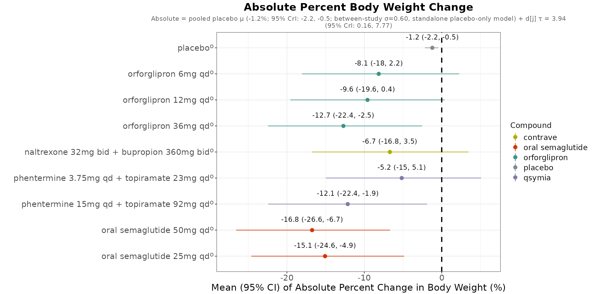

Introduces what's actually in the data first — a complete outcome on its own if that's all you need — and, only when the goal is a full analysis, turns study selection from a silent, hand-edited R vector into a forced, traceable decision at every step — so a low-dose Phase 2 study or a naming mismatch can't quietly skew a competitive-landscape result again.
What /cmh-ci helps you do
How /cmh-ci forces the decision
Real forest plot output
Oral, Phase 3 weight-loss BNMA — absolute % body weight change, from an actual /cmh-ci run

ᵒ = observed · full output also footnotes contributing studies and source data/program paths (cropped here for slide space)
.claude/skills/cmh-ci — cardiometabolic health competitive-intelligence QA/PRD dataset explorer + BNMA · mockup slide for team review; forest plot is a real run's output